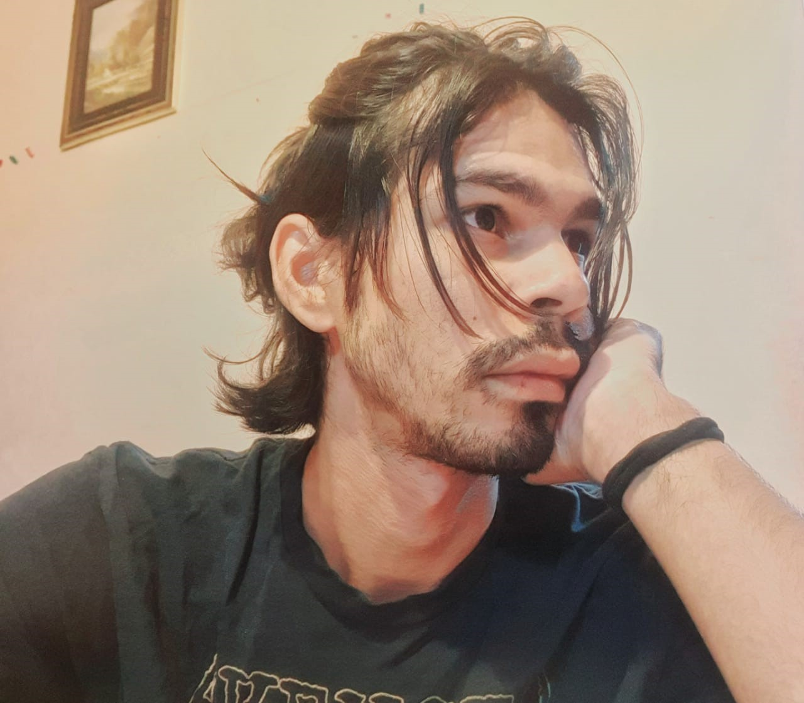
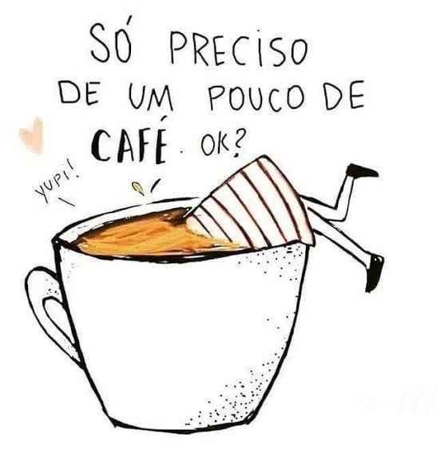

19 de Maio de 2023
Jornada do Zero ao Primeiro
projeto em HTML e CSS

Iniciando o curso de programação da Rocketseat com o projeto "Cápsula
do tempo".
Na primeira aula conhecemos o Figma, a duplicar uma cópia de um
projeto no Figma e conceitos sobre front-end Web ( especificamente
HTML e CSS ), oque é uma IDE ( Integrated Developement Environment -
Ambinete de Desenvolvimento Integrado ).
De configuração do VSCode e extensions.json á criação de memoria na
Timeline ( Live server, assets ) e tags como div, small, h1 e img.
Mesmo tendo inicido o curso bem após o seu inicio, concegui acompanhar
os demais alunos da turna e no mesmo dia já havia finalizado os
conteudos da primeira e segunda aula...
20 de Maio de 2023
Aprender não é facil, mas superar-se é melhor ainda!

Na aula 3, aprendemos a aplicação Grid no Body, background no aside, e
utilizando as imagens que importei dentro da pasta assets e
estilizando as Tags img, h1, p e span, aprendi a como "estilizar" o
layout do projeto.
Confesso que muitas dúvidas surgiram ao longo da aula entretanto, ao
consultar o grupo do Discord e lendo atentamente as dúvidas dos outros
alunos, consegui absorver mais informações a respeito dos conteúdos e
progredir no aprendizado, deste modo consegui avançar para a proxima
etapa.
Um detalhe muito importante a ser mencionada, é o fato de que eu só
conseguia ler as mensagens dos outros alunos e não me comunicar com
eles, pois nao conseguia realizar a verifição pole numero de telefone
na prataforma.
21 de Maio de 2023
Vim, vi e venci
Na aula 4 e 5, aprendi a utilazação de conceitos basicos de @keyfremes
e criação de animações de entrada, como também a compreenção do
seletor webkit, Hover, e aplicando Hover na imagem e inserindo
animações tanto nos "filhos" de aside como também na nav.
Oque aguçou a minha curiosidade mais ainda sobre o projeto, era o fato
de como foi fácil compreender o funcionamento de Layout Responsivo e
como eu poderia modificar o Layout do Grid, no body; fazendo desta
forma o Layout do projeto se ajustaria a varios tamanhos de tela
quando acessado por diferentes plataformas.
Aprendemos sobre o Git (repositório) e conceitos que o envolve e
também as funcionabilidades do git init, git add; como também oque de
fato era GitHub e como a plataforma nos permite tanto colocar os
diretórios nela a como observar o andamento das atualizações dos
projetos salvos nela.
Assim, completanto essa jornada com a minha primeira experiência com o
HTML e CSS.